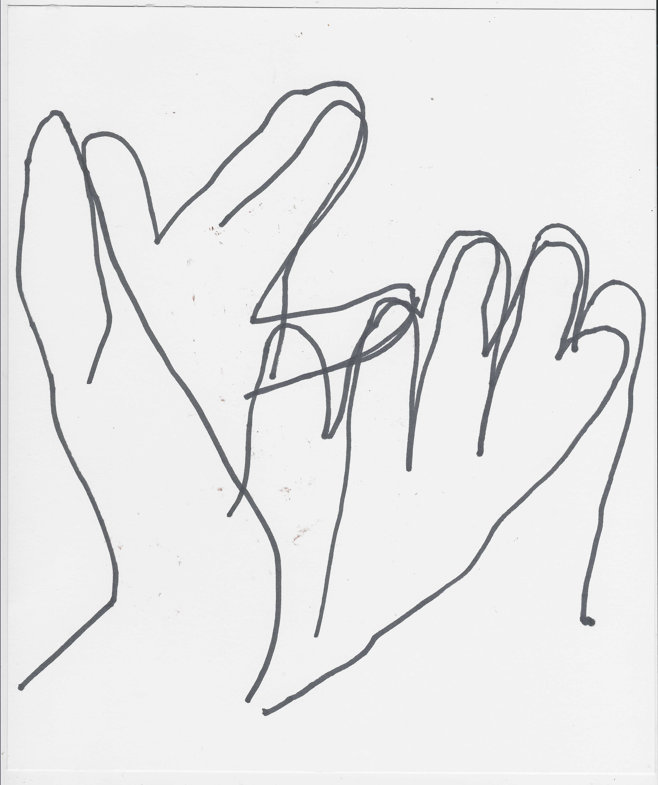
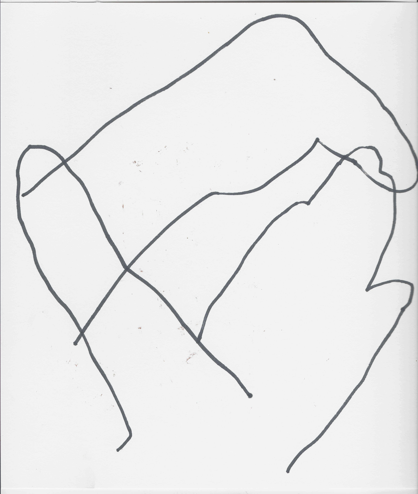
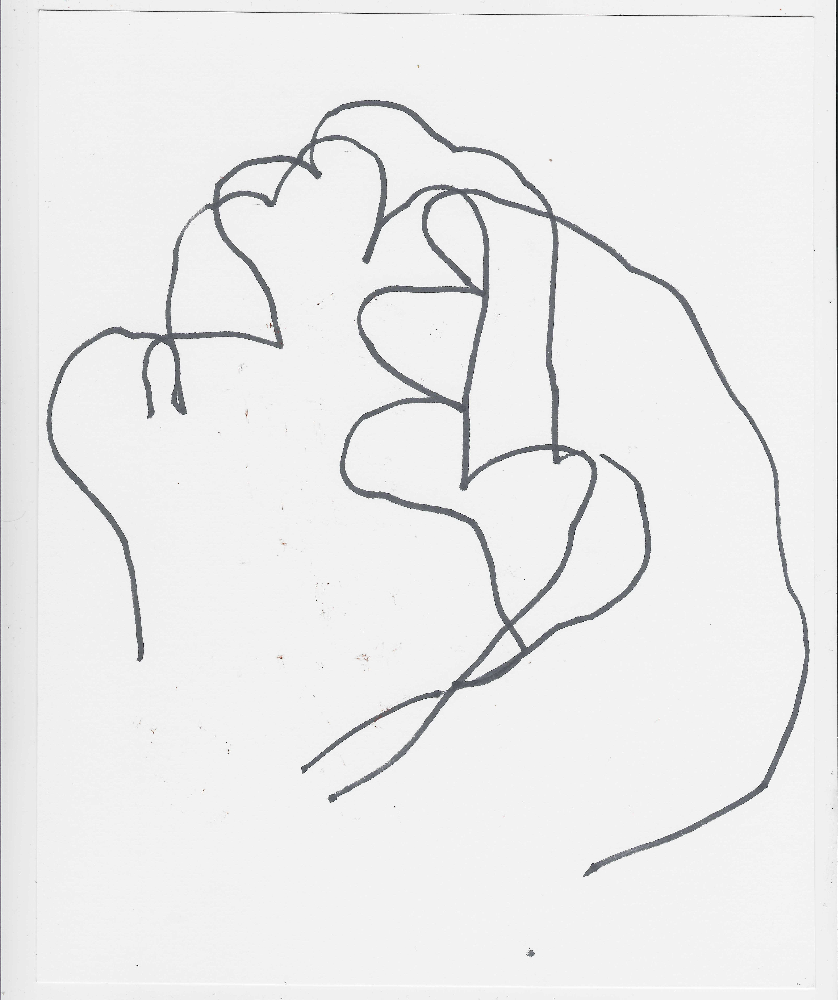
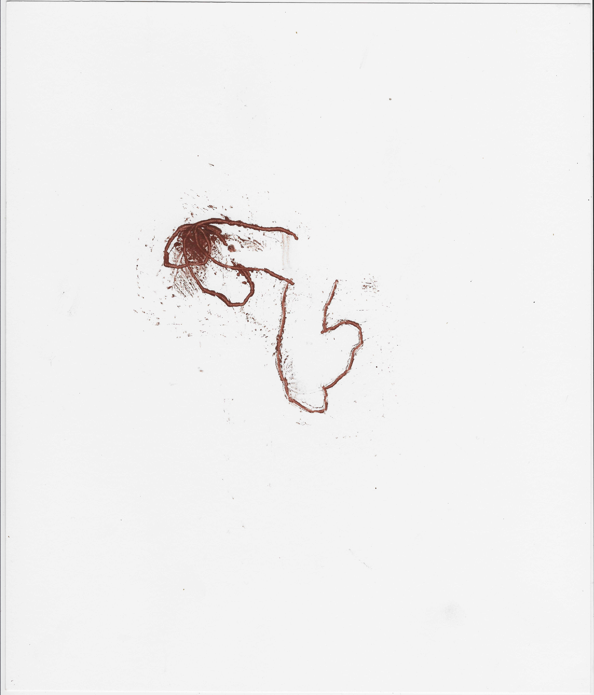
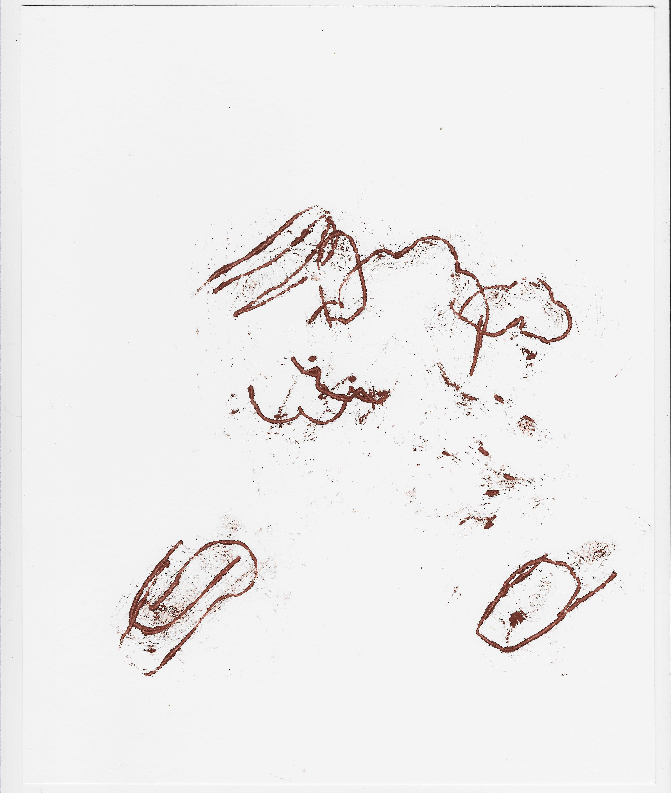
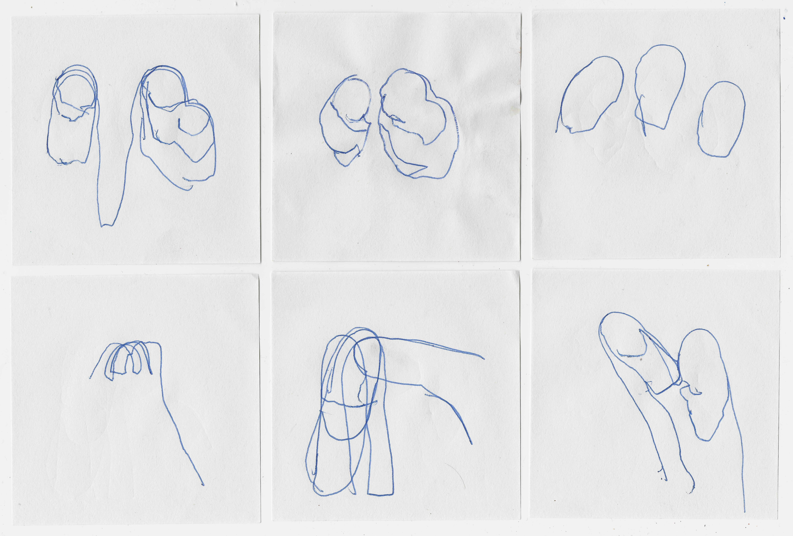
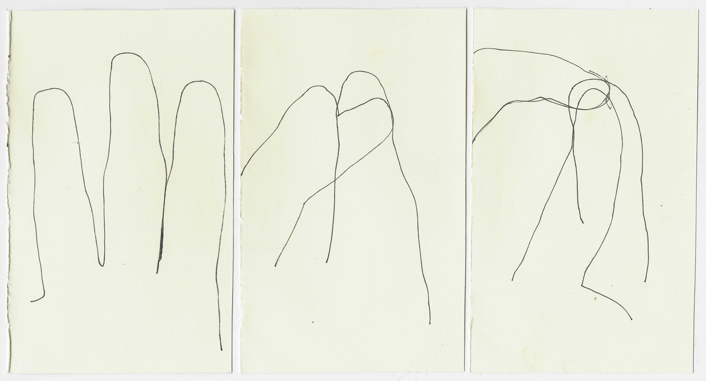
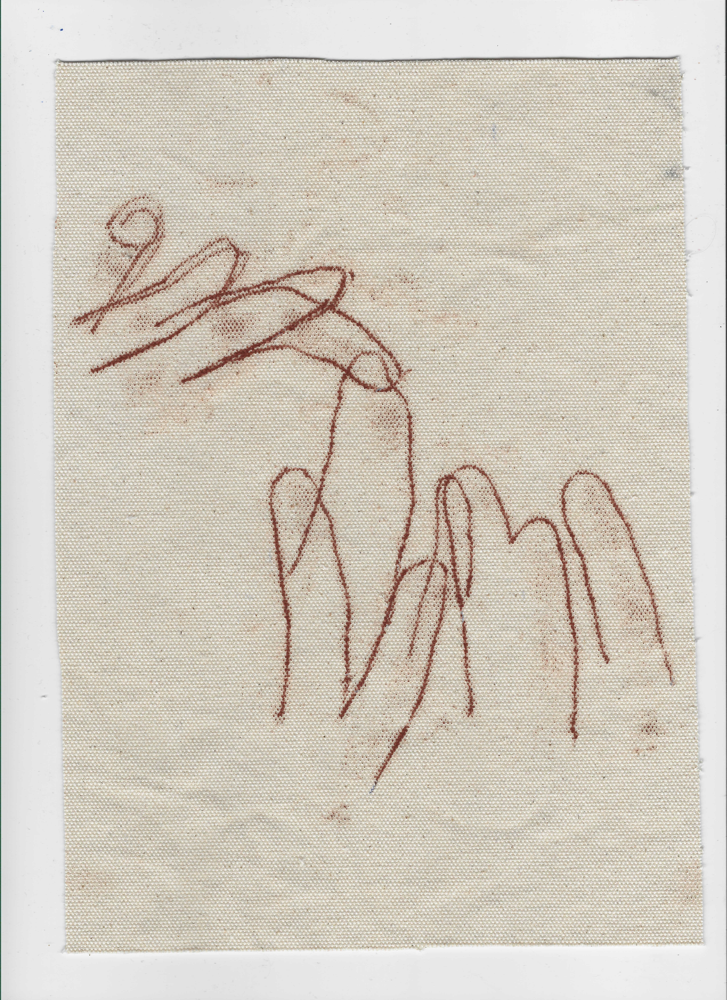

hand, finger, outlines
2025-ongoing








body outlines
2025, Groningen
selection of 150x200cm, permanent marker, sanguine, charchoal and pigment on cotton
What I will call, for now, exercises of delineating oneself on a surface, as a form of direct reflection – as a shadow is – that makes possible the seeing of the body as a space occupying form, outside of the unforgiving first person perspective. To see yourself from outside through a delineating of your physical body is never to see yourself from outside, but it certainly gives clues to it.